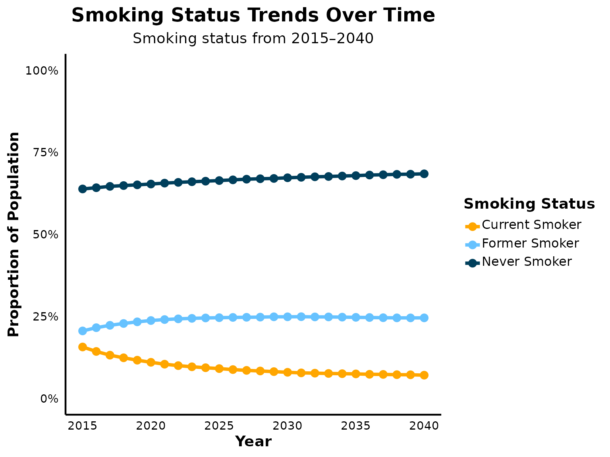
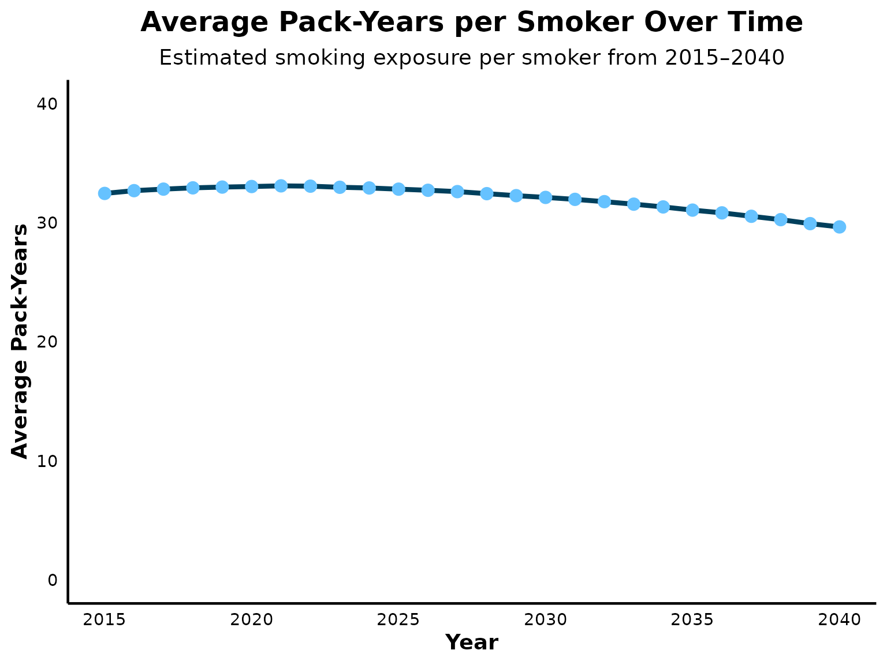

Calibrate Smoking Status
Calibrate_Smoking.RmdOverview
This document outlines the steps taken to calibrate the model to align with U.S.-based validation targets for smoking behavior using a 25 year time horizon.
Smoking behavior data from the U.S. National Health Interview Survey for the years 2018 and 2023 were used as validation targets.
Data from the 2018 U.S. National Health Interview Survey Table A-12b (https://archive.cdc.gov/www_cdc_gov/nchs/nhis/shs/tables.htm) were used to calculate the proportion of current, former, and non-smokers among adults aged 45 and over. Population counts were summed for age groups 45–64, 65–74, and 75+, yielding a total of 134,448 individuals. Of these, 13.2% were identified as current smokers (n=17,797), 29.3% as former smokers (n=39,351), and 57.2% as non-smokers (n=76,873). While the EPIC model simulates individuals aged 40 and older, the survey data were not stratified using a 40+ grouping; therefore, individuals aged 45 and over were used as an appropriate proxy for model validation.
To estimate the number and proportion of current exclusive cigarette smokers among U.S. adults aged 45 and over in 2023, data from a 2025 MMWR report based on the National Health Interview Survey (DOI: 10.15585/mmwr.mm7407a3) were referenced. The estimated number of exclusive cigarette smokers in 2023 was 8.77 million for adults aged 45–64 and 4.20 million for those aged 65 and older. Using the reported prevalence rates—11.2% for ages 45–64 and 7.5% for ages 65 and older—population denominators were back-calculated by dividing the number of smokers by their respective prevalence estimates. This resulted in an estimated population of 78.3 million adults aged 45–64 and 56.0 million aged 65 and older, totaling approximately 134.3 million adults aged 45 and over. As with the 2018 data, the absence of a 40+ age grouping required the use of 45 and over as a surrogate, resulting in an estimated smoking prevalence of 9.7% (12.97 million of 134.3 million).
To project the future decline in the prevalence of cigarette smoking among U.S. adults aged 40 and over after 2023, historical data from the 2025 MMWR report (DOI: 10.15585/mmwr.mm7407a3) was used. In 2017, the number of exclusive cigarette smokers was estimated at 11.0 million for adults aged 45–64 and 3.57 million for those aged 65 and older, totaling 14.57 million. By 2023, these figures declined to 8.77 million and 4.20 million, respectively, resulting in a combined total of 12.97 million smokers aged 45 and over. The AAPC was calculated using the formula: AAPC = ((Value 2023 / Value 2017) ^ (1/6)) - 1. This resulted in an estimated AAPC of –1.9% per year. This historical trend was then applied to model the projected year-over-year decline in smoking prevalence beyond 2023.
Summary of validation targets:
- Current smokers (2018): 13.2%
- Former smokers (2018): 29.3%
- Never smokers (2018): 57.5%
- Current smokers (2023): 9.7%
- AAPC after 2023: –1.9% per year
Step 1: Load libraries and setup
Here, the necessary libraries are loaded. The default simulation settings is set and the time horizon specified for the simulation (25 years).
library(epicR)
library(ggplot2)
library(scales)
library(dplyr)
library(tidyr)
library(knitr)
# Load EPIC general settings
settings <- get_default_settings()
settings$record_mode <- 0
settings$n_base_agents <- 1e5
init_session(settings = settings)## [1] 0
input <- get_input(jurisdiction = "us")
time_horizon <- 26
input$values$global_parameters$time_horizon <- time_horizonStep 2: Modify intercept value to calibrate proportion of non-smokers and former smokers in the model
EPIC’s existing calibration function (from EPIC Canada) accurately matched the overall smoking rates from the 2018 Summary Health Statistics: National Health Interview Survey (NHIS), however, it underestimated the proportions of never and former smokers. To address this, the intercepts that determines the probability of being a never smoker and the probability of being a smoker at time of creation in the logistic regression equation were modified.
# Modify smoking rates
input$values$smoking$logit_p_current_smoker_0_betas <- t(as.matrix(c(Intercept = 0.35, sex = -0.4, age = -0.032, age2 = 0, sex_age = 0, sex_age2 = 0, year = -0.02)))
input$values$smoking$logit_p_never_smoker_con_not_current_0_betas<-t(as.matrix(c(intercept = 4.9, sex = 0, age = -0.06, age2 = 0, sex_age = 0,sex_age2 = 0, year = -0.02)))Step 3: Modify rate of annual rate of decline in proportion of current smokers
To align the model with validation targets for the proportion of current smokers in 2018 and 2023, the intercept of the log-hazard function for smoking cessation was adjusted to modify the rate of decline in smoking prevalence.
Step 4: Lower minimum prevalence of smoking
The U.S. Healthy People initiative aims to reduce adult smoking prevalence to 5%. To reflect this national policy goal and ensure face validity of long-term projections, the minimum threshold for smoking prevalence in the model was adjusted to 5%.
# Modify lower bound prevalence of current smokers
input$values$smoking$minimum_smoking_prevalence <- 0.05Step 5: Modify intercept value to calibrate number of pack-years smoked in current and former smokers
EPIC’s existing calibration function (from EPIC Canada) underpredicted the pack-years of adults who ever smoked to that reported in the Population Assessment of Tobacco and Health (PATH) Study (https://pubmed.ncbi.nlm.nih.gov/39461637/). Data provided in 2018-2019 by the PATH Study estimated an average of 32.9 pack-years among adults who ever smoked (https://pubmed.ncbi.nlm.nih.gov/39461637/). To address this, the intercept in the logistic regression equation that determines pack-years of smoking at the time of creation was modified. Increasing the intercept to 30 improved alignment with to data from PATH.
Step 6: Modify mortality ratios for age groups
The mortality rates currently used in EPIC Canada did not include mortality ratios for individuals under the age of 60. More recent data from Cho et al.2024 (DOI: 10.1056/EVIDoa2300272; Table 2) provide age-specific mortality hazard ratios, stratified by sex. As EPIC does not model mortality by sex, the midpoint of the reported male and female estimates for each age group was used. For the mortality ratio for individuals over the age of 80, the estimates from Gillert et al.2012 were retained (DOI: 10.1001/archinternmed.2012.1397), as Cho et al.2024 did not report data for this population.
# Modify mortality ratios for current smokers vs. non smokers
input$values$smoking$mortality_factor_current <- t(as.matrix(c(age40to49 = 2.33, age50to59 = 3.02, age60to69 = 2.44, age70to79 = 2.44, age80p = 1.66)))
# Modify mortality ratios for former smokers vs. non smokers
input$values$smoking$mortality_factor_former <- t(as.matrix(c(age40to49 = 1.31, age50to59 = 1.85, age60to69 = 1.91, age70to79 = 1.91, age80p = 1.27)))Step 7: Run EPIC
run(input = input$values)## Running EPIC model (with custom input parameters)## Record mode: record_mode_none (0)## Note: No events will be recorded. Use record_mode_event (2) or record_mode_agent (1) to record events.## Simulating 100000 base agents: 10% 20% 30% 40% 50%
## 60% 70% 80% 90% 100%## [1] 0
output <- get_output_ex()
terminate_session()## Terminating the session## [1] 0Step 8: Create data tables
#Calculate smoking proportions
smokingstatus_overall <- output$n_smoking_status_by_ctime
row_sums <- rowSums(smokingstatus_overall)
smokingstatus_proportions <- smokingstatus_overall / row_sums
smokingstatus_proportions <- as.data.frame(smokingstatus_proportions)
# Rename columns for readability
colnames(smokingstatus_proportions) <- c("Never Smoker", "Current Smoker", "Former Smoker")
# Add Year column
smokingstatus_proportions$Year <- 2015:2040
# Display summary of smoking status
kable(
smokingstatus_proportions[, c("Year", "Never Smoker", "Current Smoker", "Former Smoker")],
caption = "Proportion of Smoking Status Over Time",
digits = 3
)| Year | Never Smoker | Current Smoker | Former Smoker |
|---|---|---|---|
| 2015 | 0.638 | 0.156 | 0.205 |
| 2016 | 0.642 | 0.143 | 0.215 |
| 2017 | 0.646 | 0.131 | 0.222 |
| 2018 | 0.649 | 0.123 | 0.228 |
| 2019 | 0.651 | 0.116 | 0.233 |
| 2020 | 0.653 | 0.110 | 0.237 |
| 2021 | 0.656 | 0.104 | 0.240 |
| 2022 | 0.658 | 0.100 | 0.242 |
| 2023 | 0.660 | 0.096 | 0.244 |
| 2024 | 0.662 | 0.093 | 0.245 |
| 2025 | 0.664 | 0.091 | 0.246 |
| 2026 | 0.666 | 0.088 | 0.247 |
| 2027 | 0.668 | 0.085 | 0.247 |
| 2028 | 0.669 | 0.083 | 0.247 |
| 2029 | 0.670 | 0.081 | 0.248 |
| 2030 | 0.672 | 0.079 | 0.248 |
| 2031 | 0.674 | 0.078 | 0.249 |
| 2032 | 0.675 | 0.077 | 0.248 |
| 2033 | 0.676 | 0.076 | 0.248 |
| 2034 | 0.678 | 0.075 | 0.247 |
| 2035 | 0.679 | 0.074 | 0.247 |
| 2036 | 0.681 | 0.073 | 0.246 |
| 2037 | 0.682 | 0.073 | 0.246 |
| 2038 | 0.683 | 0.072 | 0.245 |
| 2039 | 0.683 | 0.072 | 0.245 |
| 2040 | 0.684 | 0.070 | 0.245 |
Step 9: Visualize data
# Reshape data for plotting
smokingstatus_reshaped<- pivot_longer(
smokingstatus_proportions,
cols = c("Never Smoker", "Current Smoker", "Former Smoker"),
names_to = "Status",
values_to = "Proportion"
)
# Define colors
poster_colors <- c(
"Never Smoker" = "#003f5c",
"Current Smoker" = "#ffa600",
"Former Smoker" = "#66c2ff"
)
# Plot smoking status trends
ggplot(smokingstatus_reshaped, aes(x = Year, y = Proportion, color = Status)) +
geom_line(linewidth = 1.5) +
geom_point(size = 3) +
scale_color_manual(values = poster_colors) +
scale_y_continuous(labels = percent_format(accuracy = 1), limits = c(0, 1)) +
scale_x_continuous(breaks = seq(2015, 2040, by = 5)) +
labs(
title = "Smoking Status Trends Over Time",
subtitle = "Smoking status from 2015–2040",
x = "Year",
y = "Proportion of Population",
color = "Smoking Status"
) +
theme_minimal(base_size = 14) +
theme(
plot.title = element_text(face = "bold", size = 18, hjust = 0.5),
plot.subtitle = element_text(size = 14, hjust = 0.5),
axis.title = element_text(face = "bold"),
axis.text = element_text(color = "black"),
axis.line = element_line(color = "black", linewidth = 0.8),
panel.grid.major = element_blank(),
panel.grid.minor = element_blank(),
legend.title = element_text(face = "bold"),
legend.text = element_text(size = 12, margin = margin(b = 4)),
legend.key.height = unit(1.2, "lines")
)
Step 10: Observe trend in pack years per person
This figure serves to assess the face validity of the simulated trajectory of average pack-years per smoker over time. Due to the absence of nationally representative longitudinal data on cumulative smoking exposure (pack-years) in the United States, trends in smoking intensity was used to estimate the impact on pack-years.
Evidence from Cornelius et al. 2022 published in the CDC’s Morbidity and Mortality Weekly Report (DOI: 10.15585/mmwr.mm7111a1) highlights a sustained decline in cigarette consumption among daily smokers between 2005 and 2020. During this period:
The proportion of adults reporting consumption of 20–29 cigarettes/day decreased from 34.9% to 27.9% Those smoking ≥30 cigarettes/day declined from 12.7% to 6.4% Conversely, the percentage smoking 1–9 cigarettes/day increased from 16.4% to 25.0% Those smoking 10–19 cigarettes/day rose from 36.0% to 40.7%
These data reflect a broader shift toward lower daily cigarette consumption, suggesting that, on average, smokers are now consuming approximately half to one pack per day. In light of this, a projected decline in cumulative pack-year exposure is both expected and reasonable. The observed decrease in average pack-years per smoker in the model is therefore aligned with empirically documented reductions in smoking intensity, supporting the face validity of the simulated trend.
# Calculate total pack years by year
pack_years_total<- as.data.frame(output$sum_pack_years_by_ctime_sex)
pack_years_total <- rowSums(pack_years_total)
pack_years_total <- data.frame(
Year = 2015:2040,
packyears = pack_years_total)
# Calculate total number of current and former smokers by year
smoking_history <- as.data.frame(output$n_smoking_status_by_ctime)
smoking_history <- rowSums(smoking_history [, 2:3])
smoking_history <- data.frame(
Year = 2015:2040,
n_smokers = smoking_history)
# Merge datasets by year
pack_years_total_and_smoking_history <- merge(pack_years_total, smoking_history, by = "Year")
# Calculate average pack-years
pack_year_per_person <- data.frame(
Year = pack_years_total_and_smoking_history$Year,
AvgPackYearsPerSmoker = pack_years_total_and_smoking_history$packyears / pack_years_total_and_smoking_history$n_smokers
)
#Step 11: Visualize trend in pack years per person
ggplot(pack_year_per_person, aes(x = Year, y = AvgPackYearsPerSmoker)) +
geom_line(linewidth = 1.5, color = "#003f5c") +
geom_point(size = 3, color = "#66c2ff", stroke = 0.8) +
scale_y_continuous(
labels = scales::comma_format(accuracy = 1),
limits = c(0, 40)
) +
scale_x_continuous(breaks = seq(2015, 2040, by = 5)) +
labs(
title = "Average Pack-Years per Smoker Over Time",
subtitle = "Estimated smoking exposure per smoker from 2015–2040",
x = "Year",
y = "Average Pack-Years"
) +
theme_minimal(base_size = 14) +
theme(
plot.title = element_text(face = "bold", size = 18, hjust = 0.5, margin = margin(b = 8)),
plot.subtitle = element_text(size = 14, hjust = 0.5),
axis.title = element_text(face = "bold"),
axis.text = element_text(color = "black"),
axis.line = element_line(color = "black", linewidth = 0.8),
panel.grid.major = element_blank(),
panel.grid.minor = element_blank()
)